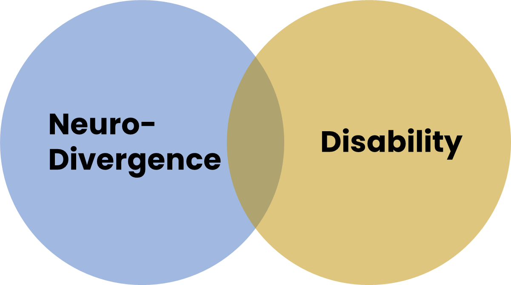

Building a world where neurodiversity is understood, respected, and empowered — through education, design, and community.
Mind the Brain Network is a multi-dimensional platform and initiative that builds inclusive spaces (physical and social), supports neurodivergent individuals and their families, and works to educate society through design, storytelling, and community empowerment. It aims to reduce stigma, revolutionize learning, and transform how we build schools, cities, and Societies — not just to accommodate difference, but to celebrate it. Mind the Brain is a movement dedicated to fostering understanding, respect, and empowerment for neurodivergent individuals. Our mission is to create inclusive environments through education, design innovation, and strong community connections.
We believe in celebrating cognitive diversity and promoting mental health awareness as essential to a thriving, just society.

To build a world that embraces neurodiversity by transforming how we design spaces, structure education, and support mental health. We create inclusive environments — both physical and social — that empower neurodivergent individuals and their families through community, research, storytelling, and systemic advocacy.
A just and inclusive society where every individual — regardless of neurological makeup — feels safe, supported, and celebrated. A world where education is accessible to all, design uplifts everyone, and communities are shaped by compassion, dignity, and the shared belief that difference is a strength.
We build environments — physical, educational, and social — that embrace all individuals, regardless of neurotype, ability, or background, ensuring everyone has access to opportunities and support.
We celebrate the full spectrum of human minds and experiences, recognizing that different ways of thinking, learning, and being are strengths to be valued—not barriers to be fixed.
We believe access to education, care, and belonging is a fundamental human right—not a privilege—working to dismantle stigma, discrimination, and systemic exclusion in Lebanon and beyond.
We equip individuals, families, and communities with knowledge, tools, and safe spaces to thrive, advocate for themselves, and shape a more just and supportive society.

Ensure healthy lives and promote well-being for all at all ages.
Ensure inclusive and equitable quality education and promote lifelong learning.
Reduce inequality within and among countries, empowering all people equally.

 ADHD is, biologically speaking, as likely to be found in girls as in boys.
Yet some of the reasons why fewer girls are diagnosed include:
ADHD is, biologically speaking, as likely to be found in girls as in boys.
Yet some of the reasons why fewer girls are diagnosed include:
Use design as a tool for systemic change and daily comfort.
Because environments are part of systems, not isolated.
Let families and communities become co-designers of inclusive futures.
Designed to equip everyday people and professionals with tools to push for change.
| Feature | Why It’s Unique |
|---|---|
| Merges education + design + family support | No current app unites these at this depth |
| Based on real-life input from neurodivergent users | Community co-creation, not just clinical |
| Uses design as therapy and activism | Empowers users to make change spatially |
| Modular for home, school, and public | Comprehensive toolkit for all scales |
| Promotes storytelling and visual empowerment | Ideal for visual thinkers, designers, families |
Differences aren’t Deficits and are part of the mainstream.
“diagnosis” or “disability” are not ‘bad’ words or concepts.
Being diagnosed with a disability gives people protections under the law and allows them to receive special education or supports at school and accommodations at work.

Neurodiversity and Disability coexist
These terms aren’t interchangeable, but are both as valuable.
Acknowledging that Neurodiversity and Disability coexist
It makes it less likely that kids will be overlooked or fall through the cracks in school.
It makes it clear that everyone has challenges that deserve support.
It makes it our duty, as educators, designers and architects, to cater for the needs of everyone.
Emerged during the 1990s
aiming to promote Equality
Increase Acceptance and Inclusion of all people
Embracing neurological differences.
Differences don’t have to only be looked at as Weaknesses
no problems that need to be “fixed” or “cured”
simply variations of the human brain
It is simply a Biological Fact, as we are diverse in our minds just like we are Diverse in our Ethnicity, Gender, Sexuality, Race …
I’m the founder of Mind the Brain — an initiative dedicated to advocating for neurodiversity, inclusive education, and mental health.
My background in architecture and human-centered design guides this mission to create compassionate spaces and systems for all minds.